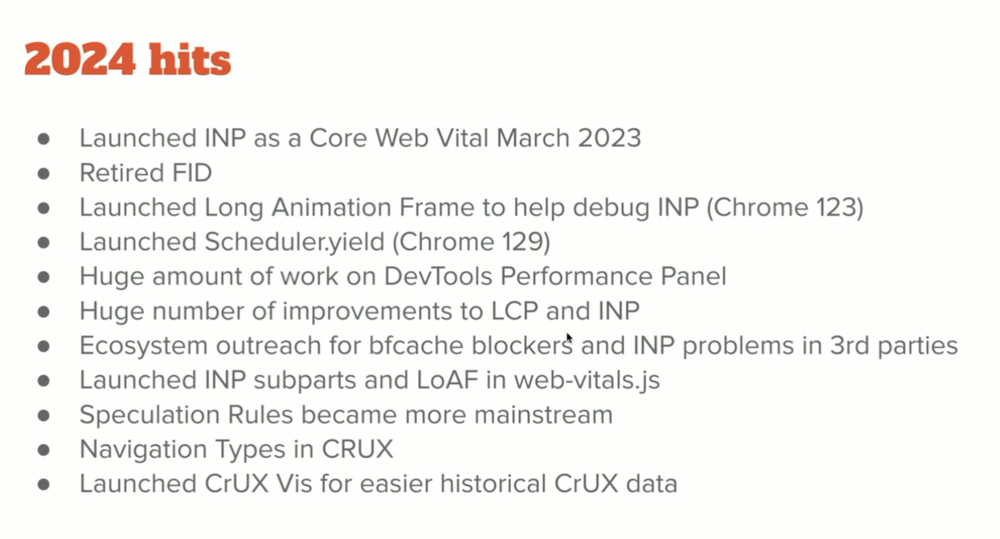
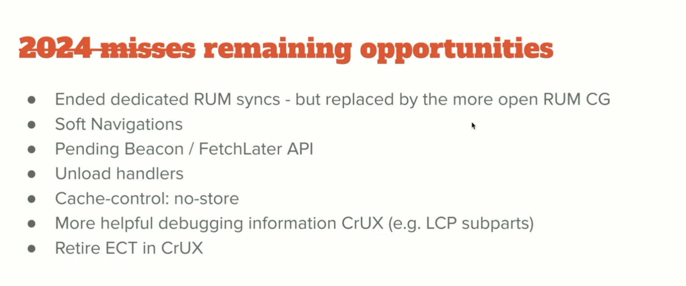
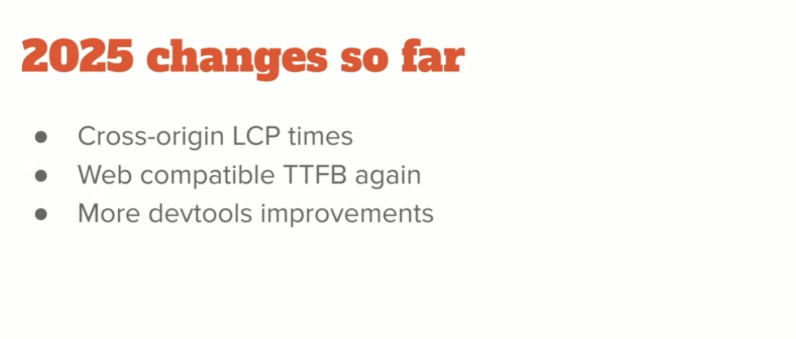
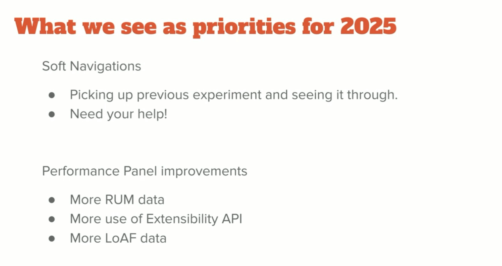
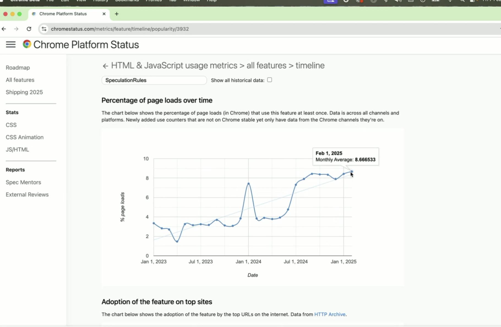
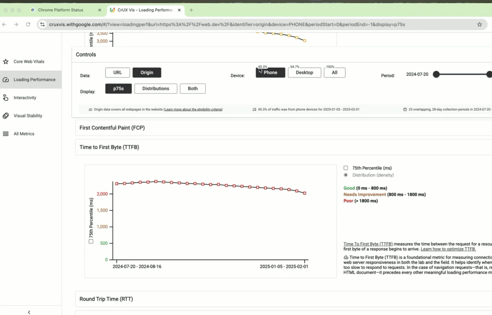

Attendees
- Nic Jansma, Cliff Crocker, karlijn@rumvision.com, Andy Davies, Barry Pollard, Edwin Molina H., Eric Goldstein, Erwin Hofman, Fabian Krumbholz, Georgi Petrov, Gilberto Cocchi, Gokberk Nur, Ivalo Hristov, Joseph Scott, Mateusz Krzeszowaik, Michal Mocny, Mike Ezzati, Nev Wylie, Paul Calvano, Philip Tellis, Rick Viscomi, Sergei Chernyshev, Sergio Gomes, Simeon Totev, Todd Gardner, Winston, Yoav Weiss, Magnus Dahl, Matt Zeunert, Joan Leon, Ram Thiru
Agenda
Minutes
Barry's Bites! - Barry Pollard
- Barry: Work on Chrome team
- ... Want to give updates on work in Chrome team
- ... Give an opportunity for everyone to catch up with news
- ... We're a little behind this quarter because we're still planning stuff
- ... Start with reflection on what we did last year
- 
- ... Big one was launched INP as a Core Web Vital, all RUM providers have implemented it
- ... Moved on from FID, sees value in INP as measurement of responsiveness
- ... Launched Long Animation Frames, some have integrated, others are actively working on it
- ... Getting a lot of positive feedback
- ... Documented on MDN as well
- ... We're going to do some small changes and bug fixes to it
- ... Adding presentation time as it's better correlated to INP
- ... Some of you wrap functions, so RUM solution is being reported as cause of INP. Hoping for some solution there. Not positive it's going to land soon though. Add feedback to Github issue if you care.
- ... Scheduler.yield as a better way of doing setTimeout() to break up long tasks that can hurt INP etc
- ... You'll need to use a fallback for browsers that don't support it
- ... Haven't heard positive signals from browsers on that yet
- ... Certainly a lot easier to use, progressive enhancement that it can be used for
- ... Dev Tools performance panel, has had a huge amount of work, lot of stuff planned for this year as well
- ... Chrome has improved LCP and INP, internal looking at Chrome code and improving. Seen a lot of graphs going up. A lot of improvements there. How much will it continue, I don't know? We've cleaned up a lot of stuff. Diminishing improvements.
- ... We do a lot of outreach to third parties, bfcache improvements. Chat widgets, analytics, RUM providers, etc. Contacting those companies and let them know they're blocking BFCache or are causing Long Tasks.
- ... Look at web-vitals.js "reference library", use it to show best-practices and how to implement web vitals. Added INP subparts.
- ... Initial LoAF support to web-vitals, taking a bit longer than we had thought.
- ... Speculation rules becoming more mainstream. RUM providers need to handle them a bit more. prerender means page is loaded seconds before the user sees it -- need to adjust web vitals like LCP. Take some action as RUM providers to offset that prerender time, and instead show user-visible LCP etc.
- ... Launched Navigation Types in CrUX. Back-Forward and Prerender usage. Back-forward navigations but no BFCache navigations give you an opportunity to look for improvements.
- ... Launched a CrUX Vis tool, an experiment at the minute. Would like to make it an official and supported project here.
- 
- ... Missed opportunities
- ... We ended the RUM syncs, but this is replaced by RUM CG. More open, able to reach more RUM providers.
- ... Soft Navigations didn't progress as much as we'd like.
- ... Pending Beacon / fetchLater() we talked about a lot, but couldn't get it shipped (resource allocations). I don't have an update now. People weren't pushing a lot about it, so if you care, talk about it.
- ... Same team was looking at Unload handlers, was hoping for it to be gone by now, going to be picked up again this quarter. Helps things like bfcache.
- ... Removing it isn't as much help as we'd hope it would be.
- ... More helpful debugging information in CrUX. Was going to add LCP subparts to CrUX. If anyone would like to see that, let me know.
- ... [REDACTED news]
- 
- ... Cross-origin LCP times, you'll possible see a jump up in LCP, that could be a reason why. Firefox isn't doing this yet. Need Timing-Allow-Origin header.
- ... Tried to change TTFB, making it web-compat again, it would "get better" but it's just a change (back) in definition
- ... We've released some dev tools improvements
- 
- ... Priorities for 2025, we're going to focus on soft navigations
- ... Pick up the experiment again
- ... Origin Trials -- we need your help again
- ... It's nice when it does work but it's not ready for launching or whatever
- ... Without your help we won't be able to ship it
- ... Performance Panel improvements will continue
- ... More RUM data being integrated
- ... From CrUX we have data, could we also have the ability to bring in "real" RUM data? On a URL basis?
- ... Extensibility API, e.g. for when Soft Navs happen
- ... More LoAF data.
- ... Questions
- Cliff: Barry: Do we have any numbers around adoption of scheduler.yield and speculation rules? Where can we find the url for CrUX Viz?
- Barry: Chrome Status shows adoption -- shows what we see from live Chrome users
- 
- ... Large movement from Cloudflare
- ... Scroll down it's more by-sites, which shows different data
- ... Looking at scheduler.yield, it's 4% of web but a smaller number of sites
- ... CrUX Vis https://cruxvis.withgoogle.com/#/
- 
- ... Show you historical data for TTFB, etc.
- ... We're starting to show Resource Types for LCP
- ... Showing p75 numbers
- ... For things like RTT we can show distributions into good/needs improvement/etc buckets
- Eric: Barry: Looking through the web-vitals.js source code, there are quite a few workarounds for non-Chrome browsers. Are there any plans to address Performance APIs in a future Interop 202x year?
- Barry: Yes and no. We haven't published what the results are, I think we publish next week.
- Mateusz: Barry: Does web-vitals.js handle those special cases with metrics and speculation rules?
- ... Yes
- Eric - did you see this? Looks like it wasn't addressed this year, but still open: https://github.com/web-platform-tests/interop/issues/894
- Barry: That's what we're waiting to see, hoping other browsers will discuss next week
- Todd: Will the LCP element be included in the subparts data?
- ... Is there a way to see the IMG selector or URL?
- Barry: I'm willing to bet that CrUX will never give you that data
- ... Too detailed for what CrUX can do, as a public data source
- ... We can give hints like type, and per-URL, but not select for CrUX
- ... That's where RUM steps in and fills the gap
- Nic: Retire ECT and using RTT, is that via the same metric we get in netinfo API?
- Barry: Yes they are, we're moving from ECT as a dimension. Moving to RTT as metric.
- ... Yes same information. ECT is supposed to be based on RTT, bandwidth. In Chrome, it's only done on RTT.
- ... In CrUX views, we'll recreate ECT from RTT data
- Yoav: Any plans to align web-exposed netinfo API to some similar bucketing?
- ... Plan at some point that Tomasz pushed where we dropped 4g 3g denominations and have different granularity. More buckets for usability. From privacy perspective current is too granular? Anyone picked up plans?
- Barry: CrUX only move. This can be get from netinfo API. ECT groupings are necessary, or get what you need from RTT API?
- ... Not gotten a lot of support
- Karlijn: Origin Trials for Soft Navigations, timing for that?
- Barry: Something having to wait until later
- Nic: The earlier we can register for tokens etc would help, as our boomerang.js pickup time is long
- Michal: End of Q2 might be easier
- Matt: Standardize naming on subparts vs. phases.
- Andy: I'd vote for "phases" as sub-parts is not a great name
- Barry: We think sub-parts is great, explains what it is, a phase can be "Loading" or "unloading" etc. We've used it in a lot of places. PR landed yesterday so it should be called sub-parts everywhere.
- ... Phases may be too generic, won't be in web.dev and devtools anymore.
- Nic: Any more specific plans on fetchLater()?
- Barry: Don't know now, we hope they can move forward. Prioritization challenge.
Next meeting
- Friday March 14th @ 10am EST
- Better tracking/visibility into vendor positions
- RUMCG issue tracking
Action items